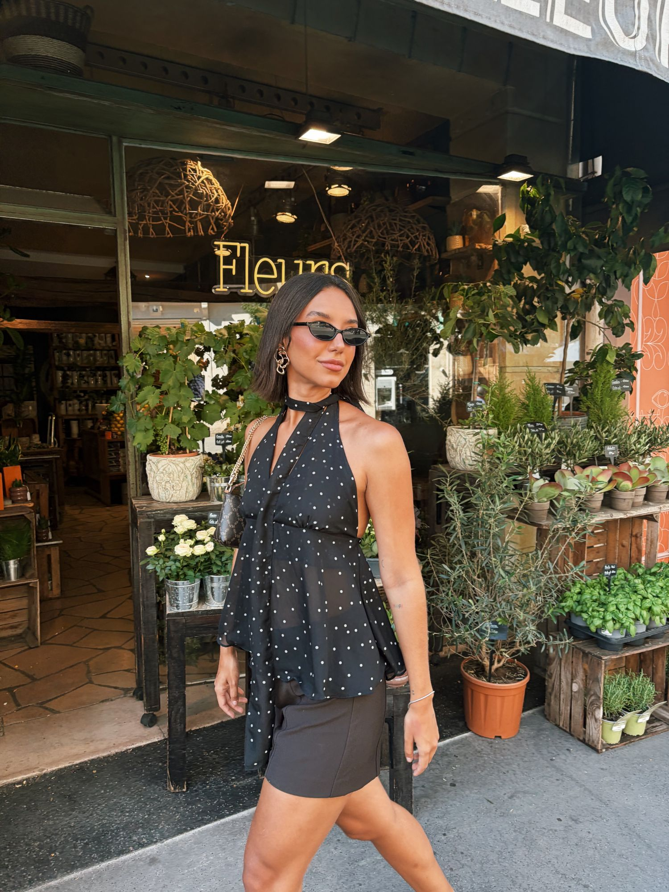
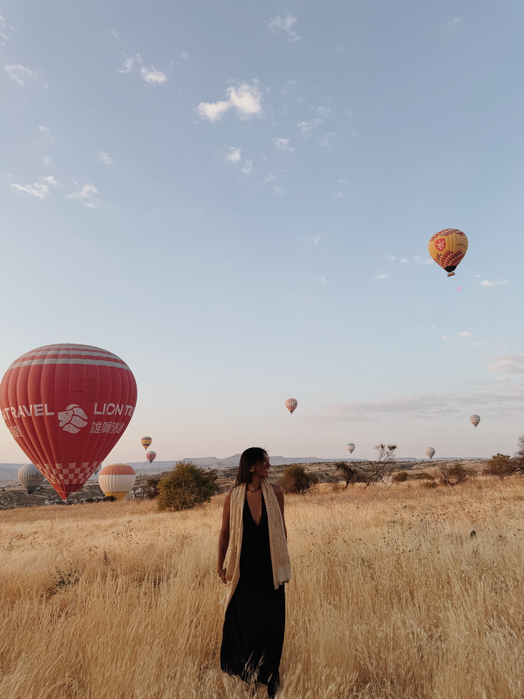

Ana Julia
Macena
Crio conteúdos autênticos para marcas com identidade, propósito e histórias para contar.

Sobre mim

Prazer, meu nome é Ana Júlia. Sou publicitária, criadora de conteúdo e apaixonada pelo universo do audiovisual. Já desenvolvi projetos para marcas no Brasil, na Espanha e na Turquia. Meu trabalho parte de uma sensibilidade estética e de atenção aos detalhes, com um olhar documental para o que acontece de forma natural. Para mim, o audiovisual é uma forma de dar espaço ao que quase passa despercebido e revelar a essência por trás de cada história, marca e projeto.
- Roteiro aprovado antes de gravar
- Uma rodada de ajuste inclusa
- Entrega em até 72 horas úteis
Ana Julia Macena
Conteúdos de destaque
Trabalhos por nicho
Entre Olhares
Branded Content
Entre Destinos
Entre Destinos é o meu projeto autoral de storytelling de viagem. Aqui eu registro destinos, experiências, pessoas e momentos através de vídeos e fotografias, mostrando cada lugar a partir do meu olhar.
Como eu te ajudo
Números e depoimentos
Resultados de campanha
O que dizem sobre o meu trabalho